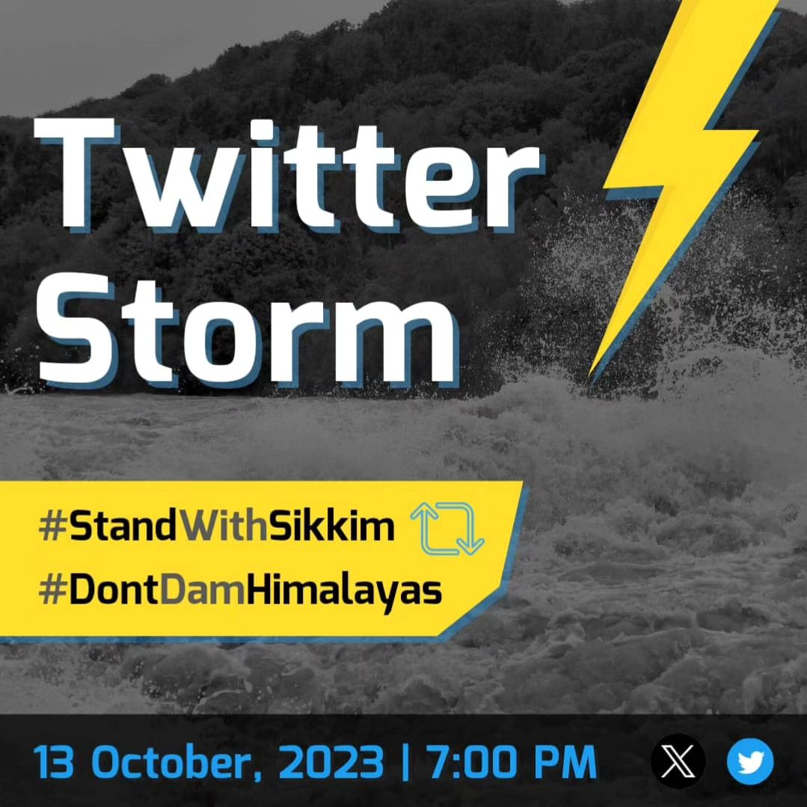

Welcome to the Stand With Sikkim
Tweet Box
Tweet Away
Designed to make it easier for you to stand in solidarity with the people of Sikkim.
We have crowdsourced 4,800 tweets, using a combination of research, news article citations and definitive demands to help amplify #StandWithSikkim
We begin at 7 pm on 13th October!
Sources of info